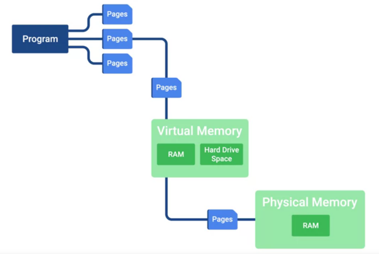
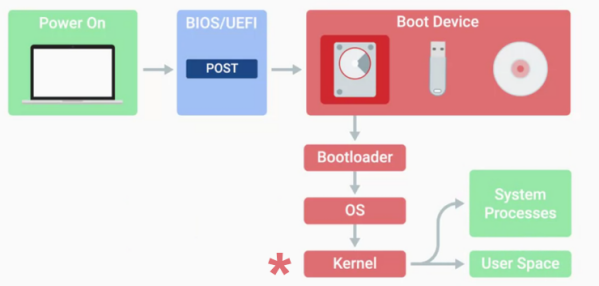
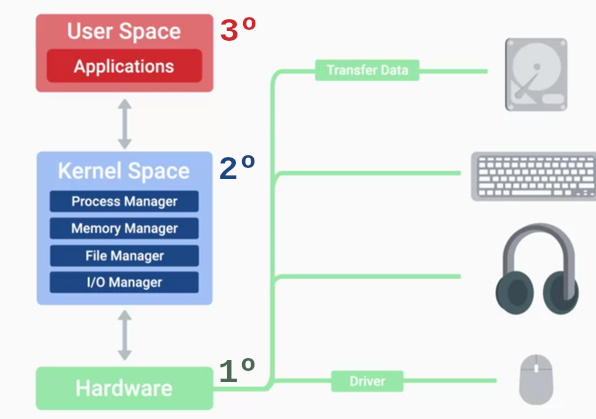

Sistemas Operativos S3
Sistemas Operativos
Un sistema operativo es el conjunto que gestiona los recursos de nuestro ordenador y nos permite interactuar con
él.
Hay dos partes principales en un sistema operativo, el kernel y el espacio de
usuario.
• El kernel es el núcleo principal de un sistema operativo. Habla directamente a nuestro
hardware y gestiona los recursos del sistema.
• El espacio de usuario está compuesto básicamente por todo aquello fuera del kernel. Las cosas
del usuario con las que interactuamos directamente como programas del sistema, interfaces de usuario,
etcétera.
Cuando decimos sistema operativo, estamos hablando de los dos, kernel y espacio de usuario.
Sistemas operativos sobre los que hablaremos:
• Windows
• Mac
• Linux Linux en sí mismo es realmente un kernel desarrollado por Linus Torvalds. Algunas distribuciones comunes
de Linux son Ubuntu, Debian y Red Hat.
• Chrome OS Chrome OS y Android OS corren ambos el kernel de Linux debajo del capó. https://es.wikipedia.org/wiki/Chrome_OS
• Android OS
• IOS
Funciones del Kernel
El kernel efectúa el almacenamiento de archivos en la gestión de archivos (file managment). Un
sistema de archivos es cómo gestionamos estos archivos. Organizamos los archivos en carpetas o
directorios para hacerlos más fácil de encontrar.
Otra función importante del kernel es la gestión de procesos. (Process managment). El
planificador de proceso es la parte del kernel que hace posible esta multitarea.
La siguiente es la gestión de memoria. Nuestro kernel optimiza el uso de la memoria y asegura
que nuestras aplicaciones tengan memoria suficiente para ejecutarse.
La última función importante que realiza un kernel es la entrada/salida o administración de
I/O. Se trata de cómo nuestro kernel habla con dispositivos externos como discos, teclados, redes,
conexiones, dispositivos de audio y más. La administración de I/O es cualquier cosa que nos puede dar entrada o
que podemos utilizar para salida de datos.
El espacio de usuario es todo fuera del kernel, como los programas, editores de texto, reproductores de música,
configuración del sistema, interfaces de usuario, etcétera.
Archivos y sistemas de archivos
El kernel del SO, se encarga del almacenamiento de los archivos y del Sistema de archivos en nuestras máquinas.
En el sistema de archivos, cuando tenemos un disco duro nuevo que queremos para almacenar datos tenemos que
borrar y configurar el disco. De esta manera nuestro sistema operativo puede leer y escribir datos en él.
• Para Windows, el sistema de archivos principal que se utiliza es NTFS. Fue
introducido en la versión anterior del sistema operativo Windows, Windows NT. E incluye muchas características,
como la encriptación, velocidades más rápidas de acceso, seguridad y mucho más. Microsoft está desarrollando
otro sistema de archivos llamado ReFS. https://en.wikipedia.org/wiki/ReFS
• Para Mac OS, el sistema de archivos predeterminado es HFS+. es transaccional
lo que significa que hace un mejor trabajo recuperando el estado del disco en caso de falla.
• Para Linux es ext4.
En general, tipos de sistema de archivos diferente no interactúan muy bien con los demás.
Otra parte importante de la gestión de archivos es el almacenamiento de datos del archivo.
Escribimos los datos en nuestro disco duro en forma de bloques de datos. Cuando salvamos algo
en nuestros discos duros, no siempre se aloja en una sola pieza. Puede ser dividida en muchas piezas y escrito a
diferentes partes del disco. El almacenamiento en bloque mejora el manejo rápido de datos porque los datos no
son almacenados en una larga pieza y pude ser encontrada más rápido. También es mejor para la utilización de
espacio de almacenamiento.
Por último, tenemos que mantener los metadatos que contiene la información de nuestro archivo.
Hay mucha información a cerca de nuestro archivo que nosotros queremos saber, como que lo ha creado, cuando fue
la ultima modificación, quién tiene acceso a él y así sucesivamente. Los metadatos de archivo nos dicen todo lo
que necesitamos saber sobre nuestro archivo. También nos dice qué tipo de archivo es. Una
extensión de archivo es la parte anexa de un nombre de archivo que nos dice Qué tipo de archivo
es, en ciertos sistemas operativos.
Gestión de procesos
Una de las tareas más importantes que realiza nuestro kernel es la Gestión de Procesos.
• Un proceso es una tarea del programa que se está ejecutando.
• Un programa es una aplicación que podemos ejecutar, como nuestro navegador o editor de
texto.
Podemos tener muchos procesos del mismo programa funcionando al mismo tiempo.
Cuando queremos ejecutar nuestros programas, tenemos que dedicarles recursos informáticos, como RAM y CPU. Solo
tenemos una cantidad finita de recursos y queremos ser capaces de ejecutar varios programas. Un núcleo tiene que
gestionar nuestros recursos de forma eficiente, de forma que se puedan ejecutar todos los programas que queremos
usar.
Nuestro sistema está realmente ejecutando constantemente múltiples procesos que son necesarios para su
funcionamiento, así que nuestro kernel tiene que preocuparse de todos estos procesos a la vez. El kernel tiene
que programar el tiempo de la CPU para ejecutar las instrucciones del proceso. Ejecuta uno por uno los procesos
a través de algo conocido como un segmento de tiempo. Un segmento de tiempo es un muy breve
intervalo de tiempo que es asignado a un proceso para su ejecución por la CPU.
El kernel crea procesos, los programa eficientemente y gestiona cómo se cancelan los procesos.
Esto es importante ya que necesitamos una manera de recoger todos los recursos previamente usados que procesos
activos fueron ocupando y reasignarlos a otro proceso.
Gestión de la memoria
Recuerda que cuando un proceso corre, éste necesita tiempo de CPU, pero también necesita memoria. Cuando los
procesos corren, tienen que tomar más espacio en la memoria, de tal forma que la computadora los pueda leer y
cargar rápidamente.
La memoria llega en cantidades pequeñas. Así que, para obtener más memoria como la que hay físicamente, usamos
algo llamado memoria virtual. La memoria virtual es una combinación de espacio de disco
duro y RAM que actúan como memoria para que nuestros procesos la puedan usar. Cuando ejecutamos un
proceso, tomamos los datos del programa en pedazos llamados páginas. Almacenamos estas páginas
en la memoria virtual. Si queremos leer y ejecutar estas páginas, éstas tienen que ser enviadas a la memoria
física o a la RAM.

Cuando almacenamos la memoria virtual en el disco duro, llamamos al espacio asignado, espacio de
intercambio (swap space). El kernel toma cuidado de todo esto por nosotros. Éste
maneja el proceso de toma de página de datos y los intercambia entre la RAM y la memoria virtual.
Administración de E/S
Hablamos de los dispositivos que realizan entrada y salida de datos, como dispositivos de E/S.
Entre ellos están nuestros monitores, teclados, mouse, discos duros, altavoces, auriculares Bluetooth, cámaras
web y adaptadores de red. Nuestro kernel administra estos dispositivos de E/S. El kernel debe poder cargar los
controladores que se usan para que podamos reconocer y comunicarnos con estos diferentes tipos
de hardware. Cuando el kernel es capaz de iniciar los controladores para comunicarse con el hardware, también
administra la transferencia de datos hacia y desde los dispositivos. E/S no solo implica la transferencia de
datos entre nosotros y nuestros dispositivos: los dispositivos también necesitan comunicarse entre sí. Nuestro
kernel maneja toda la intercomunicación entre dispositivos. También determina cuál es el método de transferencia
más eficiente y hace todo lo posible para asegurarse de que no haya errores en los datos durante el proceso.
Cuando tengas que resolver un problema con una máquina lenta, por lo general, es algún tipo de deficiencia de
recursos de hardware.
Cómo interactuar con el SO: Espacio del usuario
Cómo interactuamos las personas con el kernel, esto es lo que llamamos el espacio del
usuario.
Hay dos formas en que podemos interactuar con nuestro SO: con una shell o con una
interfaz gráfica de usuario (GUI).
Trabajaremos con la interfaz de línea de comandos o shell CLI. Esto significa
que usaremos comandos de texto.
Una shell es, básicamente, un programa que interpreta comandos de texto y los envía al SO para que los
ejecute.
Una interfaz gráfica de usuario, o GUI, es una forma visual de interactuar con una computadora.
La shell todavía es utilizada para ejecutar comandos, en especial por los "power users". Los power users son
usuarios de computadora por encima de la media. La mayoría de las máquinas Linux con las que interactúes en el
soporte de TI se accederá de forma remota. Para nuestros propósitos, solo usaremos la shell más común,
shell bash o "Bourne-again shell" en Linux. También hay una shell para Windows llamada
Powershell.
Registros
(Logs)
Los registros son archivos que, valga la redundancia, registran eventos del sistema en nuestra computadora al
igual que el diario de un sistema. Nuestra computadora registrará eventos como cuándo se encendió, cuándo se
cargó un controlador, e incluso cuándo algo no funciona, en forma de mensajes de error. En todos los sistemas
operativos, los registros se conservan para que podamos consultarlos cuando necesitemos descubrir algo que
sucedió.
El proceso de inicio
Cuando iniciamos una computadora, en inglés usamos el término "boot". Básicamente, significa
empezar desde la nada y seguir una serie de pasos para llegar a un sistema completamente operativo.
• BIOS/UEFI es un software de bajo nivel que inicializa el hardware de nuestra computadora para
asegurarnos de que todo esté listo.
• A continuación, BIOS/UEFI ejecuta un proceso llamado autoprueba de encendido o POST. POST
realiza una serie de pruebas de diagnóstico para asegurarse de que la computadora funciona correctamente.
• Luego, dependiendo de la configuración de BIOS/UEFI, se seleccionará un dispositivo de inicio. Los
dispositivos que están conectados a nuestro sistema, como discos duros, unidades USB, unidades de CD, etc., se
configuran en un cierto orden de inicio. La comprobación de los dispositivos se hará en este orden y la
computadora buscará lo que se conoce como un cargador de arranque
(Bootloader). El cargador de arranque es un pequeño programa que carga el sistema
operativo.
• Una vez que nuestra computadora encuentra un cargador de arranque en un dispositivo, en el orden indicado,
comenzará a ejecutar este programa. Esto, a su vez, comenzará a cargar un programa más grande y complejo y, por
último, carga nuestro sistema operativo.
• Una vez que el cargador de arranque carga nuestro SO, nuestro kernel se carga. El kernel
controla el acceso a nuestros recursos informáticos. También carga controladores y más para que
nuestro hardware pueda comunicarse con nuestro software.
• Luego, se inician los procesos esenciales del sistema y los elementos del espacio de
usuario. Esto incluye procesos como el acceso del usuario, el inicio de un entorno de escritorio, y
otras cosas que, básicamente, nos permiten interactuar con nuestro sistema.
Secuencia de arranque

Procesos de Kernel

Cómo elegir un sistema operativo
Los sistemas operativos empleados por una organización tienen mucho que ver con las aplicaciones y los sistemas
que se necesitan ejecutar o correr. ¿Qué hardware se utilizará? Los sistemas operativos modernos hacen un buen
trabajo de soporte hardware común. Recuerda que tenemos diferentes arquitectura de CPU, de 32-bit y de 64-bit.
Algunos creadores de sistemas operativos ofrecen su sistema operativo grabado en disco o a traves de USB,
algunos otros te permiten reinstalarlo directamente de internet.
https://www.makeuseof.com/tag/operating-system-choose-next-pc/
 Índice
Índice